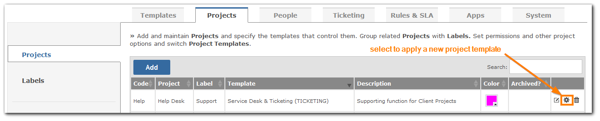
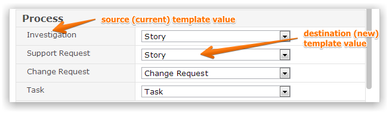

Every project is created from a Template, which through its screens and custom fields defines the data it captures, its status values, its workflow, as well as its menus, priority, severity, time recording, links and resolution values. Once a Template has been applied to a project and the Project Definition saved, it is no longer possible to change the Template because of the possibility that data exists for the project. However, you can move a project from one Template to another by selecting the Move control.

Select the template that you wish to move your project to.
For every one of the metadata elements controlled by the Source Template and applied to project data you will be prompted to supply a mapping value in the Destination Template. Once the data mapping is complete you will need to doubly confirm the action.
The confirmation checkboxes are at the bottom of the mapping layout so you will have to go through the entire mapping definition to get to it. Then you need to check 'Yes Change Project Template' and
'Yes I am Sure' before the action can be executed.